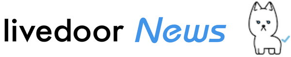
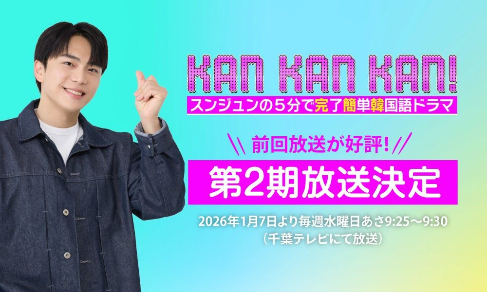
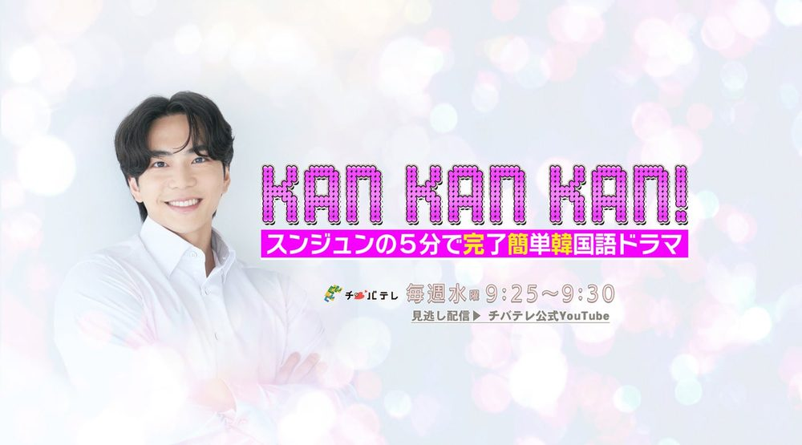
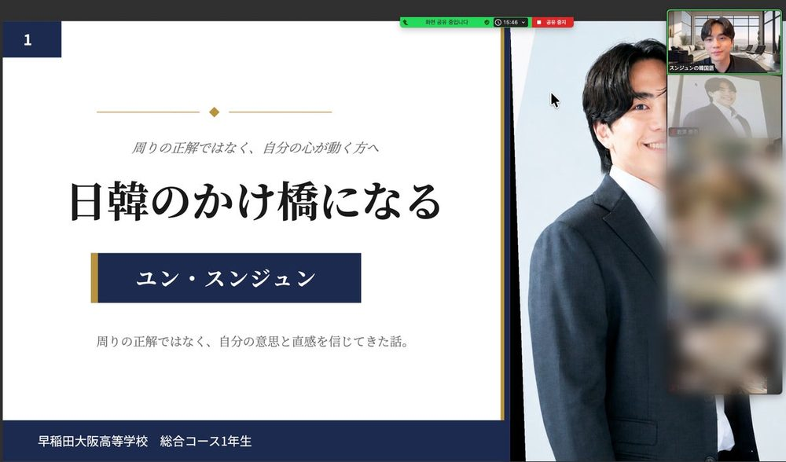
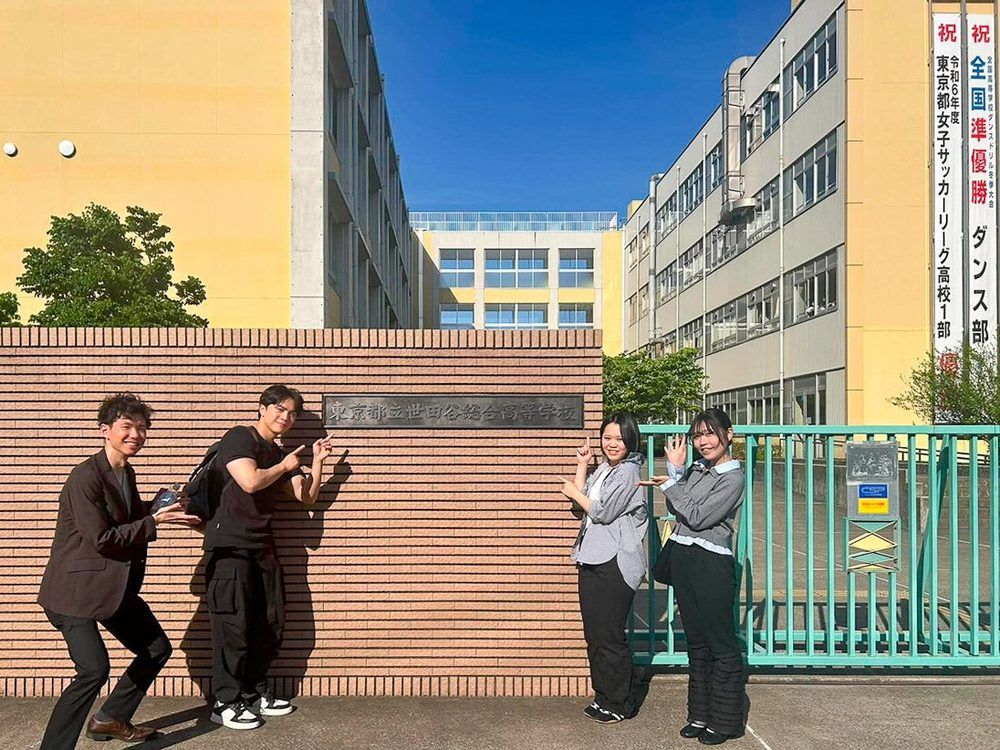
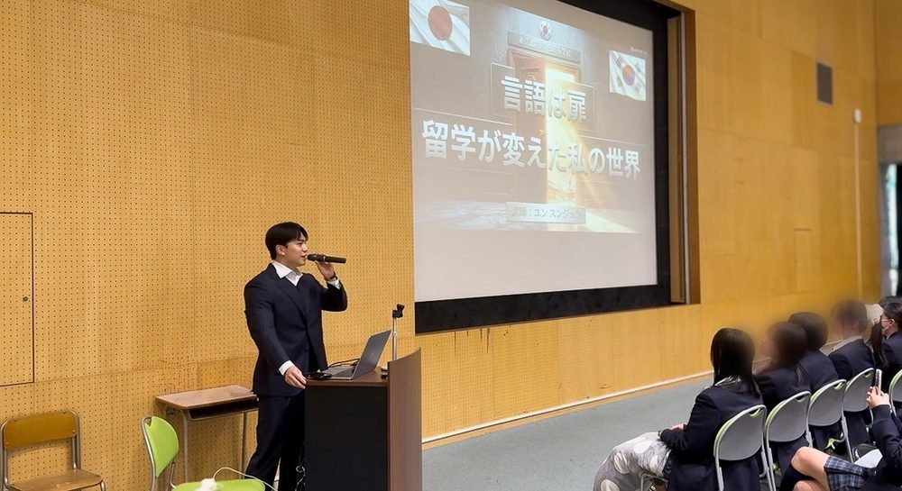
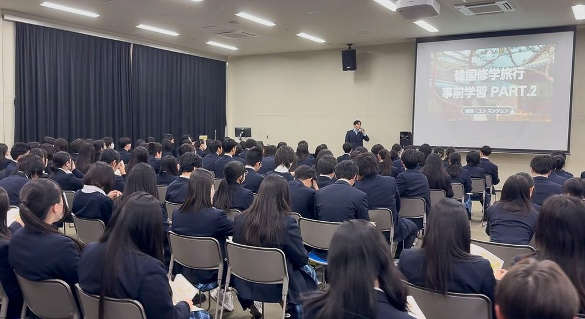
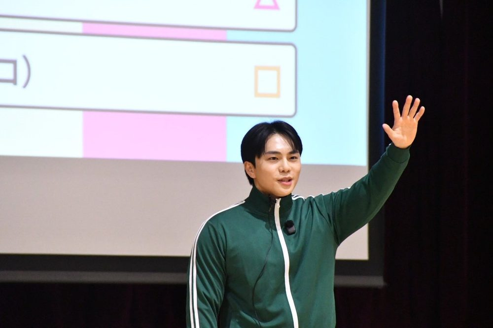
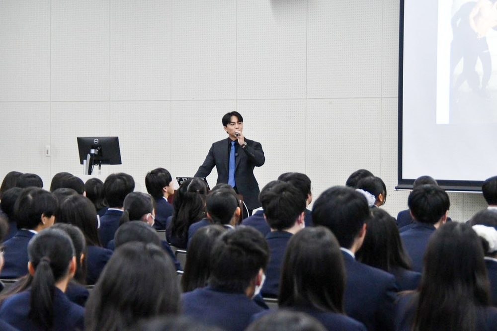
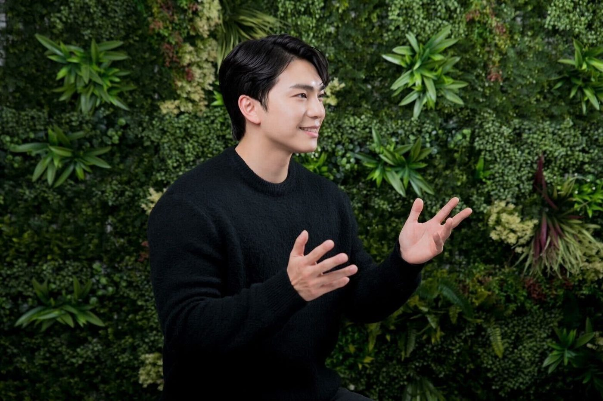

スンジュン代表・講師代表
京都大学総合人間学部卒
脳科学、生理学、言語学専攻
- 生まれも育ちも韓国のソウル
- 中高まで韓国のインターナショナルスクール
- 高校卒業後、文部科学省の国費留学生に選抜
- 4ヶ国語マルチリンガル（韓日英中）
- 日本語能力検定 N1満点／TOEIC満点／HSK4級
株式会社アクセントエースは、京都大学卒・元アナウンサーの韓国語講師スンジュンが代表を務める韓国語教育の会社です。「韓国語は発音が9割」を軸に、韓国語の発音を徹底的に鍛える完全オンラインの韓国語レッスン「K-PRO」を運営し、千葉テレビの韓国語番組『KAN・KAN・KAN！』への出演、YouTube・公式LINEでの無料講義、学校での講演などを通じて、"通じる韓国語"を広めています。



小学生から大学生まで、韓国文化・発音指導・キャリア形成をテーマに各校で講義を行っています。
明治大学 農学部（生田キャンパス）

講演会早稲田大阪高等学校

特別授業東京都立世田谷総合高校

特別講義東京都立芦花高校

講演会東京都立葛飾総合高校

出張授業中央区立佃島小学校

講演会東京都立葛飾総合高校
講演・特別授業のご依頼は 公式LINE よりお問い合わせください。

K-PROは、韓国語の発音を徹底的に鍛えて短期間で「話せる実感」を得られる独自プログラムです。聞こえた音を再現する力を育て、リスニング・スピーキング・記憶定着を同時に高めるレッスンを、ネイティブ講師が1対1で丁寧にサポートします。10代〜20代はもちろん、50代〜60代の初心者の方も安心して始められます。
+30%（最大）
発音と意味を関連付けて学習することで、単語やフレーズの記憶定着率が最大で30%向上すると言われています。脳が音と意味を同時に処理することで、より強固な記憶回路を形成するためです。
×2（理解度）
発音練習は、同時にリスニング能力の向上にもつながります。韓国語の音声に慣れ親しみ聞き取る力が伸びることで、会話や教材の理解度が最大で2倍向上したというデータがあります。
×1.5（流暢さ）
正しい発音を身につけると、自信を持って韓国語を話せるようになります。自信がつくと積極的にコミュニケーションをとるようになり、実践的な会話を通して流暢さが最大1.5倍向上したという研究結果もあります。
−20%（最大）
発音に特化した学習は、上記の効果により総合的な学習時間を最大で20%短縮できる可能性があります。効率的な学習方法によって、無駄な時間を削減できるためです。
韓国出身の講師は全員、文部科学省の国費留学生に選抜された日本の難関大学出身。日本人講師は本場・高麗大学の国語国文学科で学びました。
京都大学総合人間学部卒
脳科学、生理学、言語学専攻
東京大学 学部・修士卒／博士課程在学
文化人類学専攻
一橋大学 商学部卒
高麗大学 国語国文学科卒／修士課程在学
東京大学 文学部 社会学科
一橋大学 法学部
韓国語の発音が難しく、何度練習してもうまくいかないと感じていましたが、スンジュン先生の丁寧な指導で発音の基本をしっかり学ぶことができました。今では韓国語を話すことに対する抵抗感がなくなり、発音が褒められることも増えました。本当に感謝しています。
韓国語の発音が難しいと感じていて、自信を持てずにいましたが、スンジュン先生の指導で一気にその壁を乗り越えることができました。先生の励ましのおかげで、今ではネイティブに近い発音を目指して頑張っています。実際に韓国で買い物をしたときに、店員さんに驚かれたのは嬉しかったです。
以前は韓国語を聞き取るのも難しく、自分が発音しても通じないことが多かったです。スンジュン先生の教え方はとても分かりやすく、発音のコツをしっかり身につけることができました。今では韓国ドラマを字幕なしで楽しめるようになり、韓国語のスキルが大きく向上しました。
韓国語の発音がなかなか上手くいかず、特に微妙な音の違いを区別するのが難しかったのですが、スンジュン先生の分かりやすい指導のおかげで、自分の弱点を一つずつ克服できました。今では韓国の友人から「発音がきれいだね」と褒められることが増え、とても嬉しいです！
発音の練習をしても自分の声に自信が持てず、いつもモヤモヤしていました。でもスンジュン先生が根気よく一つ一つ丁寧に教えてくれたおかげで、発音がしっかり改善しました。今では堂々と韓国語を話せるようになり、学ぶ楽しさが倍増しました！
韓国語の発音がカタカナっぽくなるのが悩みでしたが、スンジュン先生の具体的なアドバイスを実践するうちに、ネイティブに近い発音ができるようになりました。韓国語で話すたびに「すごい発音！」と驚かれることが増え、自信がつきました。本当に感謝しています！
MESSAGE
発音ひとつで印象は変わります。ビジネスや留学でも自信を持って話せるよう、ネイティブ講師が細かい発音の違いまで徹底指導します。まずは公式LINEからお気軽にご相談ください。